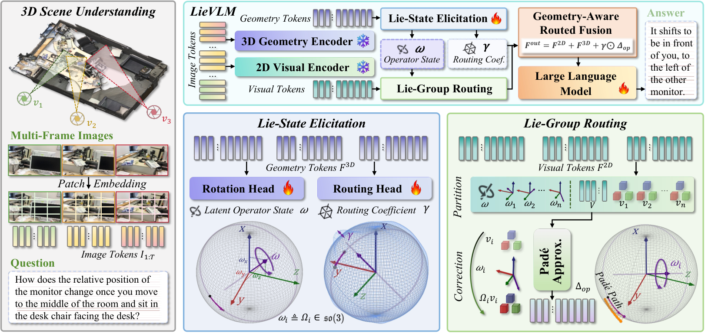

Problem Setup
01 · Viewpoint-Induced Semantic Drift
论文研究一个很具体的失效：同一个对象和同一个问题，换一个相机视角后，MLLM 对目标区域的响应会漂移，表现为关注区域变散、对象身份不稳定或空间答案变化。作者把它称为 viewpoint-induced semantic drift。输入是多视角 RGB 和查询，输出是 caption、grounding、detection 或空间问答；目标是让语义表征随几何变化而调整，而不是把几何只当作额外文本。
关键比较对象是 additive geometry fusion：把 VGGT 几何 token 投影后加到视觉表征。LieVLM 的问题是，视角变化包含旋转结构，简单相加未必能表达“同一特征在不同坐标下如何变换”。这是一种机制假设，不能单凭结果推出所有视角误差都来自旋转。
Method
02 · Lie-State Elicitation and Local SO(3) Routing
模型先从 VGGT 几何 tokens 预测每个通道组的 Lie state：局部旋转参数与 routing coefficient。视觉 token 经过线性投影后被分成三维 triplets，每个 triplet 被当作一个三维向量。这样做的目的不是恢复真实物体坐标，而是在特征空间中提供一个具有旋转约束的局部操作。
设 v_{n,m}∈R³ 是第 n 个特征组的第 m 个 triplet，Ω_{n,m}∈so(3) 是由几何 token 产生的反对称生成元。理想操作是 exp(Ω)v。作者用 Padé 1/1，也就是 Cayley 等价形式的有理近似，得到数值稳定的局部旋转；再计算 c=R_{1,1}(Ω)v−v，只把相对 identity 的 correction 送回原视觉与几何路径。gated fusion 用 γ 控制 correction 强度，因此原始语义不会被完全替换。
这里的“geometry-conditioned”来自 VGGT token，而不是额外的真值相机姿态监督。SO(3) 约束只作用于每组三维特征子空间；它不能保证整个高维表示是全局等变的。
Mechanism
03 · Framework Figure and Information Flow

Jingjun Yi et al. · Original figure, unmodified · arXiv HTML · CC BY 4.0 · Paper & Caption ↗
Figure 1 把路径分成三步：Lie-State Elicitation 从几何 tokens 产生旋转和门控；Lie-Group Routing 在局部三维子空间里变换视觉 token；Geometry-Aware Routed Fusion 将 correction 与原视觉、几何表示融合后交给语言模型。沿箭头看，几何不是只在输入端拼接，而是决定如何改变语义表征。
这条路径解释了论文为什么把 additive fusion 作为核心 baseline：若只把几何向量相加，模型仍需自己从向量线性组合中学习视角变换；LieVLM 把一个受约束的变换族显式放进中间层。实验中的 generic cross-attention、unconstrained 3×3 generator 和视觉条件 routing 则用于区分“有额外参数”和“结构化、几何条件的 operator”这两个因素。
Training
04 · Training and Controlled Comparisons
作者在 3.05M generalist mixture 上训练，包含视频指令、空间问答、3D grounding/captioning、3D detection 和 object-centric spatial reasoning。Qwen2.5-VL-7B 与 LieVLM/VG LLM 使用相同语言和几何 backbone、训练数据、优化与评测；受控差异是 additive geometry fusion 对比 Lie routing。Qwen3-VL-8B 还用于测试更强 backbone 和更大数据规模下的可迁移性。
训练并没有把 routing 当作独立的几何重建任务。梯度从 caption、grounding、detection 或 QA loss 回到旋转参数、gate、投影和上游融合；因此得到的是任务驱动的特征变换。论文没有证明它能改善 LingBot-Map 的深度或位姿，迁移到重建时需要另外定义几何监督。
Evidence
05 · Evidence Across 3D Understanding and Spatial Reasoning
在 Scan2Cap，LieVLM-8B 的 CIDEr 为 82.7，高于 VG LLM-8B 的 80.0；在 ScanRefer，Acc@0.25/0.5 为 64.5/57.2，相比发表的 VG LLM-8B 结果提高 6.9/6.3 点。EmbodiedScan 的 F1 从 41.2 到 45.8（4-frame），从 40.0 到 44.1（6-frame）。这些结果分别对应 caption、语言 grounding 和视频检测，不能合并成单一几何精度结论。
在通用空间推理上，Qwen3-VL-8B 的 VSI-Bench average 从 60.6 提升到 62.8，并改善八类中的七类。作者还报告三种随机种子的匹配结果；operator ablation 显示 generic cross-attention 和无约束 generator 只能带来有限收益，so(3)-Padé 路径更稳定。这里最有说服力的对照是相同 backbone、数据和训练下只改变融合算子，而不是与完全不同规模的模型比较。
Discussion
06 · What Transfers to LingBot-Map—and What Does Not
对 LingBot-Map，LieVLM 提供的启发是：语义进入几何模型时，可以让几何状态决定语义特征的变换或读取方式，而不只是把语义向量加到当前 token。一个可检验的简化版本是把每个对象/区域的语义 token 分成三元组，由当前几何 token 预测小规模旋转与 gate，再把 correction 融合到写入前的 memory token。训练时用深度、位姿和跨帧一致性 loss 约束这条路径；语义蒸馏只作为辅助项。
但不能声称 LieVLM 已经证明语义改善重建。它处理的是多视角 3D understanding，使用 VGGT 几何 tokens 和 MLLM 任务损失；LingBot-Map 的目标是流式深度、位姿和点图，memory 是 causal state。真正的迁移实验应比较 additive fusion、结构化 routing 和不注入语义三组，并报告几何误差、长序列漂移、显存与延迟。
Discussion
Reading Questions
Why is additive fusion an insufficient baseline?
它只说明几何向量被提供给模型，未规定视角变化如何作用于语义特征；LieVLM 把局部旋转结构与门控显式化。
Does SO(3) routing recover camera pose?
不直接。它在学习的三维特征子空间中施加局部旋转，几何 token 只作为条件，并不输出可用于 SLAM 的姿态。
What is the fair transfer test for LingBot-Map?
固定 backbone、缓存容量和训练预算，对比无语义、输出端 additive、写入前 routing；同时看几何和语义指标，才能区分当前帧增强与 memory 形成收益。
Which paper claim is strongest?
在匹配 backbone 与数据的 3D understanding、空间推理对照上，结构化 routing 比 additive fusion 更稳；它没有覆盖流式重建几何。
References
First submitted 2026-11-01. Read 2611.02306v1 on 18 November 2026. One original framework figure is reproduced under the paper's CC BY 4.0 arXiv license. Experimental results are reported by the authors and have not been independently reproduced.
Verified on 2026-11-18. Paper results refer to the linked versions. Repository references were checked on this date.